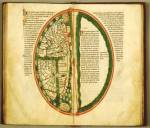

Lambertus van Sint-Omaars, Liber Floridus. Latijn. Handschrift op perkament, 284 ff., 325 x 226 mm. Noord-Frankrijk (Picardië?), einde van de dertiende eeuw. -- (VLF 31)
Het Liber Floridus van de kanunnik Lambertus voert ons naar Vlaanderen in het begin van de twaalfde eeuw, om precies te zijn naar Sint-Omaars, het tegenwoordige Saint-Omer in het uiterste noorden van Frankrijk. Schokkende gebeurtenissen hadden de wereld veranderd. Engeland was sinds de slag bij Hastings in 1066 via Willem de Veroveraar steeds nauwer met het continent verbonden; de eerste kruistocht (1096-1099) had de weg naar Byzantium en het Oosten opengelegd. Beide gebeurtenissen oefenden een diepgaande invloed in Vlaanderen uit.
Zij lieten diepe sporen na in het werk van Lambertus van Sint-Omaars, die omstreeks 1112-1115 begonnen was aan een groot, doorlopend geïllustreerd encyclopedisch werk, waarvoor hij alle relevante literatuur, voor zover voor hem bereikbaar, excerpeerde.
Het werk kende ondanks de grootse opzet veel succes. Tot in de vijftiende eeuw werd het geregeld afgeschreven en er zijn zeven kostbaar geïllustreerde handschriften van bewaard. Dit is des te merkwaardiger omdat het voor de moderne onderzoeker een raadselachtig boek blijft, waarvan de ordening volstrekt onsystematisch lijkt. Naar de precieze bedoelingen van de auteur moet men nog vaak gissen. Wel verbaast hij ons keer op keer door zijn belezenheid. Zijn bronnen bracht hij vaak met grote inspanning bijeen, zoals nog kan worden afgeleid uit de autograaf van Lambertus, thans berustend in de Gentse universiteitsbibliotheek.
Het kapittel van Sint-Omaars beschikte zelf maar over een bescheiden bibliotheek. Veel beter voorzien was de rijke abdij van Sint Bertijn ter plaatse, ongetwijfeld voor de auteur de belangrijkste vindplaats van literatuur (vergelijk nummer 17).
Het Leidse handschrift, een mogelijk in Picardië ontstane kopie van het einde van de dertiende eeuw, bevat verscheidene bladen die in de autograaf verloren zijn. Daartoe behoort de hier openliggende wereldkaart op de folia 175v-176r.
De aarde bestaat uit twee aaneengesloten halve schijven, van elkaar afgegrensd door de in rood weergegeven baan van de zon. De wereld ter rechterzijde is leeg en onbekend aan de ‘kinderen van Adam’, zoals in de toelichting staat. Aan de andere zijde is de bekende wereld in kaart gebracht met de drie werelddelen, Europa, Azië en Afrika, van elkaar gescheiden en omringd door zeeën. Het Heilig Land vormt het centrum van de wereld. In het uiterste oosten (op de kaart bovenaan) is het Paradijs gedacht. Het legendarische Argua en Tarpobane insula staan voor Birma en Ceylon. De grens met de onbekende wereld loopt dan verder over Ethiopië, het land van de ‘kinderen van Seth’. Duidelijk herkenbaar is de Middellandse Zee met het eiland Sicilië en de Zuilen van Hercules (Gibraltar). De Oceanen zijn gevuld met talloze legendarische eilanden. Van een getrouw kaartbeeld is nog geen sprake. Voortbordurend op bekende voorstellingen van de aarde zijn alle geografische begrippen die men uit de literatuur kende, in één kaartbeeld samengebracht.
Literatuur
- L. Delisle, ‘Notice sur les manuscrits du "Liber Floridus" de Lambert, chanoine de Saint-Omer’, in: Notices et extraits des manuscrits de la Bibliothèque nationale et autres bibliothèques, 38 (1906), p. 577-791.
- A.W. Byvanck, Les principaux manuscrits à peintures conservés dans les collections publiques du Royaume des Pays-Bas, Paris 1931 ( = Bulletin de la Société francaise de reproduction des manuscrits à peintures. 15), p. 87.
- Christina, queen of Sweden. A personality of European civilisation. Stockholm 1966, nr. 1347.
- J.P. Gumbert, ‘Recherches sur le stemma des copies du Liber Floridus’, in: Liber Floridus colloquium. Papers read at the international meeting held in the University Library, Ghent, on 3-5 September 1967. Ed. by A. Derolez. Gent 1973, p. 37-50.
- G.I. Lieftinck, ‘Observations codicologiques sur le groupe W des manuscrits du Liber Floridus’, in: Liber Floridus colloquium. Papers read at the international meeting held in the University Library, Ghent, on 3-5 September 1967. Ed. by A. Derolez. Gent 1973, p. 31-36.
- K.A. de Meyïer, Codices Vossiani Latini. Leiden 1973-1984 ( = Bibliotheca Universitatis Leidensis. Codices manuscripti. XIII-XVI), t. 1, p. 68-71, vergelijk t. 4, p. 3.
- A. Derolez, Lambertus qui librum fecit. Een codicologische studie van de Liber Floridus autograaf. Brussel 1978 ( = Verhandelingen van de Koninklijke Academie voor Wetenschappen, Letteren en Schone Kunsten van België, kl. der Lett., 40 (1978), nr. 89.
| vorige pagina | top pagina |